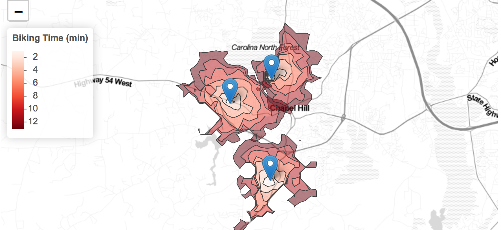

Using Google API for Planning

Introduction
Extracting data from un/semi/structured websites is becoming increasingly common place. Since data is collected, modified and refined continuously, it is increasingly useful to both serve them via web protocols rather than flat files that are downloaded. Furthermore, much of spatial data collection has become private, which also means that firms have stronger incentives to protect their datasets and curate what is available to the others. In other instances, the user or the analyst requires only a small section of the dataset. In these instances and others, data is served by a web-based protocol. Harvesting data usually takes the form of automating the process of sending requests to the webserver and parsing the output to extract relevant data for storage and analysis.
Legality
Different jurisdictions have different legal restrictions and permissions on web scraping. There are also end user agreements that prevent certain actions (storage, retrieval, replication etc.). Please make sure that you are aware of these before attempting to make a local copy of the data that might be privately owned.
In general, scraping requires automated and repeated requests to the server. As long as these requests are not a disruptive rate, it is unlikely that you will run afoul of legality. Local data storage and replication of services is an entirely different ball game. Please consult a lawyer.
Many public and government websites are also now serving up data using web protocols. It is, therefore, useful to learn how to parse the outputs of these requests. In some instances, private firms such as Google, Baidu, Instagram etc. also provide Application Programming Interfaces (API) that serve data in a structured format. In these instances, subject to end user agreements, rate limits and daily quotas, restrictions on storage and transfer, it may be possible to access datasets that are otherwise unavailable.
Collect points of interest (POI) from Google
Points of interest are both businesses as well as other locations from around the US that allow us to understand the neighborhood character. Google has one of the largest collections of these to enable their maps and directions interfaces. They are of different types from ‘accounting’ to ‘zoo’ (see documentation). In this post, we will use Google PLACE API as a example to scrape the resturants around UNC-Chapel Hill. For more detailed information about how the API works, Please see the documentation.
Acquiring API keys.
Every request to API requires a key so the website can authorize and control the how much and who can access the information. To acquire a key from Google you need to follow these instructions:
According to the recent Google policy documentation that only
address_component, adr_address, alt_id, formatted_address, geometry, icon, id, name, permanently_closed, photo, place_id, scope, type, url, utc_offset, vicinity. If you are interested for other information you need to enable billing option to be charged.
Scraping
Once you acquired the API key, you need to follow a few steps iteratively to get at the results.
The steps are:
- Intialise your R session
- Set the parameters of the query
- Send the query repreatedly to get all the results
- Cleaning and exporting the data
- Visualize the result
The two main packages, we are going to use for scraping the Google is RCurl and jsonlite. Install them, if necessary and intialise them into the library.
Curl is a command line tool that allows us to transfer data especially over the web. Rcurl is an interface for that tool. Because the result of the API query is formatted in JavaScript Object Notation (JSON), we use jsonlite to parse it easily. JSON is lightweight data-interchange format.
###Intialise your R session
##################### USE YOUR OWN KEY #########################
key = "_YOUR_KEY_HERE_"
library(RCurl)
library(tidyverse)
library(sf)
################################################################Set parameters
According to the API documentation, we need to set a number of parameters to send the request to API. First, we will use the “round buffer” API to search all the restraunts within 2000 meters distance around UNC-Chapel Hill. You can extract the coordinates from https://www.gps-coordinates.net/ by searching for “Old Well”. The coordinates extracted are:Latitude: 35.912073 | Longitude: -79.05123. You can also use Google maps, select a point and right click to get to ‘What is here?’ and copy the latitude and logitude.
The Places API allows you to query for place information on a variety of categories, such as: establishments, prominent points of interest, geographic locations, and more. You can search for places either by proximity or a text string. A Place Search returns a list of places along with summary information about each place; additional information is available via a Place Details query.
There are three type of requests in Places API, “Find Places”,“Nearby Search”,“Text Search” To scrape POI based on the location criteria, the request need to be use here is “Nearby Search”, according to the document:
A Nearby Search lets you search for places within a specified area. You can refine your search request by supplying keywords or specifying the type of place you are searching for. A Nearby Search request is an HTTP URL of the following form: https://maps.googleapis.com/maps/api/place/nearbysearch/output?parameters
location <- "35.912073,-79.05123" #range,Latitude and Longitude as a string.
radius <- 2000 # max is 50000
type <- "restaurant" ### set the type of poi, for supported types: https://developers.google.com/places/web-service/supported_typesQuerying the API
Querying the API is simply passing the url string to the server. paste and paste0 are quite useful for constructing these queries
searchURL <- paste("https://maps.googleapis.com/maps/api/place/nearbysearch/json?key=",
key,
"&location=",location,
"&radius=",radius,
"&type=",type,
sep="")
result <- getURL(url = URLencode(searchURL),ssl.verifypeer = FALSE)
library(jsonlite)
tmp <- jsonlite::fromJSON(result)
str(tmp, max.level = 2) # Setting max.level so that it won't overwhelm the page. Feel free to explore.
# List of 4
# $ html_attributions: list()
# $ next_page_token : chr "CpQECAIAAI9Ge4b0W63AifpB91_oRYVkRK76Hg_ZRdUlgIGrSl21jRqgaviBHAZscnGcsUmpB5-LutKESkAS-mwQG7OQuH6p-u9JXryXEiLxDgS"| __truncated__
# $ results :'data.frame': 20 obs. of 15 variables:
# ..$ geometry :'data.frame': 20 obs. of 2 variables:
# ..$ icon : chr [1:20] "https://maps.gstatic.com/mapfiles/place_api/icons/restaurant-71.png" "https://maps.gstatic.com/mapfiles/place_api/icons/restaurant-71.png" "https://maps.gstatic.com/mapfiles/place_api/icons/restaurant-71.png" "https://maps.gstatic.com/mapfiles/place_api/icons/restaurant-71.png" ...
# ..$ id : chr [1:20] "a936effd6a88935a17a342ff6a31d553ea540fe2" "57c756dbf2b2a47bf42f5653b62bd3b5af422673" "844be2aa98f4d2e5315d1bfbbe40dcc45e5eb897" "edb90eeb4b89849de121553f72aaa767362bb1c1" ...
# ..$ name : chr [1:20] "Amante Gourmet Pizza - Carrboro" "Top of the Hill Restaurant & Brewery" "Vimala's Curryblossom Cafe" "Acme Food & Beverage Co" ...
# ..$ opening_hours :'data.frame': 20 obs. of 1 variable:
# ..$ photos :List of 20
# ..$ place_id : chr [1:20] "ChIJd27Voh7DrIkRopK4FUbe_ys" "ChIJiU9Og-fCrIkRlhl07CZ-Jso" "ChIJjcPPk-HCrIkR3tF9XFCWMvI" "ChIJl8i1WhnDrIkRa2K08FWRADs" ...
# ..$ plus_code :'data.frame': 20 obs. of 2 variables:
# ..$ price_level : int [1:20] 2 2 2 3 2 2 2 2 1 2 ...
# ..$ rating : num [1:20] 3.7 4.3 4.4 4.4 4.2 4.6 4 4.6 3.7 3.6 ...
# ..$ reference : chr [1:20] "ChIJd27Voh7DrIkRopK4FUbe_ys" "ChIJiU9Og-fCrIkRlhl07CZ-Jso" "ChIJjcPPk-HCrIkR3tF9XFCWMvI" "ChIJl8i1WhnDrIkRa2K08FWRADs" ...
# ..$ scope : chr [1:20] "GOOGLE" "GOOGLE" "GOOGLE" "GOOGLE" ...
# ..$ types :List of 20
# ..$ user_ratings_total: int [1:20] 88 490 569 395 280 450 708 1243 87 264 ...
# ..$ vicinity : chr [1:20] "300 East Main Street G, Carrboro" "100 East Franklin Street #300, Chapel Hill" "431 West Franklin Street #415, Chapel Hill" "110 East Main Street, Carrboro" ...
# $ status : chr "OK"
tmp$status
# [1] "OK"
names(tmp$results) # Print the attributes in the response.
# [1] "geometry" "icon" "id"
# [4] "name" "opening_hours" "photos"
# [7] "place_id" "plus_code" "price_level"
# [10] "rating" "reference" "scope"
# [13] "types" "user_ratings_total" "vicinity"
restaurants <- tmp$results # This is fine, only because the status is OK. One advantage of using the fromJSON from Jsonlite package instead of the rjson package is that the results are automatically a data frame. This makes it easier to work with. If you do use the rjson::fromJSON you will have to parse the list into a data frame.
Visualise these results
library(leaflet)
m <- leaflet(cbind(restaurants$geometry$location$lng, restaurants$geometry$location$lat)) %>%
addProviderTiles(providers$Stamen.TonerLines, group = "Basemap") %>%
addProviderTiles(providers$Stamen.TonerLite, group = "Basemap") %>%
addCircles(group = "POI",popup = restaurants$name)%>%
addLayersControl(
overlayGroups = c("POI", 'Basemap'),
options = layersControlOptions(collapsed = FALSE)
)
mExercise
- The query results only in 20 restaurants at the one time. But there is a next page token that allows you to query for more. Write a loop to continue to request more restaurants, until they are exhausted.
- Make sure that you are not overloading the server and not going over your query limit. Implement sanity checks.
- Make sure your loop recovers gracefully from any errors. Use TryCatch and check for status with each query.
Instead of restaurants search for day care centers around UNC. What can you infer from the results?
Find all the fire stations in Orange county and store them on the disk. We will use this later.
The advantage of the above code is that it is generalisable. As long as the API has good documentation, you can adapt the code to extract information from it. In some instances, instead of JSON, XML output is generated. In such cases, it is customary to use xml2 instead of jsonlite to convert to tables, tibbles and dataframes.
Using prebuilt packages
For common APIs, R has some convenience packages. For example, we can use googleway to access much of the google API functionality for users to access the Google Place API. According to its package document
Googleway provides access to Google Maps APIs, and the ability to plot an interactive Google Map overlayed with various layers and shapes, including markers, circles, rectangles, polygons, lines (polylines) and heatmaps. You can also overlay traffic information, transit and cycling routes.
library(googleway)
## not specifying the api will add the key as your 'default'
## Set the key for the package to use
set_key(key = key)
#google_keys() # Use this to find
## Send the Query
tmp <- google_places(search_string = "Restaurant", location = c(35.912073,-79.05123), radius = 2000, key = key)
## All the result is already compiled into a R dataframe for further analysis, which is much eaiser to manipulate later.
restaurants2 <- tmp$results
restaurants2[, c('name', 'rating', 'price_level')] %>% head()
# name rating price_level
# 1 City Bus Burritos and Tacos 4.7 1
# 2 Hops Burger Bar 4.7 2
# 3 Tacos El Niño 4.5 NA
# 4 Hibachi & Company 4.6 1
# 5 Al's Burger Shack 4.7 1
# 6 Tandem 4.5 3Googleway package has the abiltity to get more complicated data as well. For example, you can access the route between two points (say Old well to Southpoint mall)
tmp <- google_directions(origin = c(35.912073,-79.05123),
destination = c(35.90497, -78.946485),
mode = "walking",
key = directionskey, # Make sure that your API key has directions enabled.
simplify = TRUE) %>%
direction_polyline() %>%
decode_pl() %>%
.[,c(2,1)] %>%
as.matrix() %>%
st_linestring() %>%
st_sfc(crs="+init=epsg:4326")
library(mapview)
mapview(tmp)I recommend that you walk through the above code step by step. Especially notice how decoding a google encoded polyline results in a lat/lon data frame but sf wants a lon/lat data frame.
Exercise
For each centroid of block group in Orange County, NC, find and visualise the google recommended routes by walking, biking and driving to UNC campus. Draw conclusions about the efficacy of google’s directions.
Using Distance Matrix from Google, find the shortest distance from each centroid of the block group to each of the fire stations that you discovered earlier.
You can use tigris package to download the blockgroup geometry from census.
Collect streetview images from Google
In this section, we will use Google streeview API to download the streetview images around UNC. For more detailed information about how the API works, Please see the documentation.
There are two ways to send requests for streetview API, based on location or photoid. For this task we will use the location method to send the request.
Accoriding to the document:
The Street View API will snap to the panorama photographed closest to this location. When an address text string is provided, the API may use a different camera location to better display the specified location. When a lat/lng is provided, the API searches a 50 meter radius for a photograph closest to this location. Because Street View imagery is periodically refreshed, and photographs may be taken from slightly different positions each time, it’s possible that your location may snap to a different panorama when imagery is updated.
#35.913697, -79.054205 <- Franklin street coordinate
set_key(key = key)
# we use the google_streeview function in googleway package to compile the request url.
SearchURL <- google_streetview(location =c(35.91357,-79.054596),key = directionskey, output = "html")
library(httr)
library(jpeg)
#For image data, we need to use the GET function from httr package to extract the data
t <- httr::GET(SearchURL)
#Save data using the writeJPEG function from jpeg package
writeJPEG(content(t),"name.jpg")There are other parameters that can be manipulate the outcome such as size, heading, fov and pitch
- size - numeric vector of length 2, specifying the output size of the image in pixels, given in width x height. For example, c(600, 400) returns an image 600 pixles wide and 400 pixles high.
- heading - indicates the compass heading of the camera. Accepted values are from 0 to 360 (both 0 and 360 indicate north), 90 indicates east, 180 south and 270 west. If no heading is specified a value will be calculated that directs the camera to wards the specified location, from the point at which the closest photograph was taken.
- fov - determines the horizontal field of view of the image. The field of view is expressed in degrees, with a maximum allowed value of 120. When dealing with a fixed-size viewport, as with Street View image of a set size, field of view in essence represents zoom, with small numbers indicating a higher level of zoom.
- pitch - specifies the up or down angle of the camera relative to the Street View vehicle. This is often, but not always, flat horizontal. Positive values angle the camera up (with 90 degrees indicating straight up); negative values angle the camera down (with -90 indicating straight down)
Exercise
- Download the streetview images from 20 random points near the fire stations around Orange County and store them. Use different parameters for same location and notice the differences. What impact does this have on analysis when you use them for say segmenting the street scene into % area covered in ‘trees’, ‘roads’, ‘buildings’, ‘store front’ etc.
Local servers
There is no reason to think that servers have to be remote. You can also query a local (on your computer) server and your R session acts like a client (e.g. browser). We can demonstrate this using OSRM server and constructing Isocrhrones. Isochrones are area you can reach from a point within a specified time. We can plot isochornes of every 2 min biking, around some random points in Orange County, NC For this we use the Open Source Routing Library (OSRM), though any other API works as well (e.g. Google, Mapbox etc. see this blog for example.) .
For our purposes, we are going to set up a OSRM server on your computer.
- Different OS require different instructions, so please follow the website to construct the backend for your OS.
- Download North Carolina road network from Openstreetmap from Geofabrik for example (use the pbf file).
- Construct a graph that can be used for finding shortest routes. Use suitably modified versions of
- osrm-extract nc.osm.pbf -p ./profiles/bicycle.lua
- osrm-partition nc.osrm
- osrm-customize nc.osrm
- osrm-routed –algorithm=MLD nc.osrm
in the command window/terminal (outside R). If all goes well, this sequence of steps will create local server ready to accept your requests. You can always shut it down by closing the terminal/command window, after you are done with your analysis. The server will be ready to be queried at http://localhost:5000/ or http://127.0.0.1:5000
To get other modes, simply change the lua profile.
The following code is here for the sake of completeness and is not evaluated
library(osrm)
# Ideally set these options up
options(osrm.server = "http://localhost:5000/")
options(osrm.profile = 'bike')
randompoints <- matrix(c( -79.065443, 35.924787, -79.087353, 35.914525, -79.066203, 35.881521),
ncol=2, byrow =TRUE) %>%
data.frame()
names(randompoints) <- c('lng', 'lat')
randompoints$name <- c('pt1', 'pt2', 'pt3')
rt <- osrmRoute(src = randompoints[1,c('name', 'lng','lat')],
dst = randompoints[2,c('name','lng','lat')],
sp = TRUE) %>% st_as_sf()
rt %>% leaflet() %>%
addProviderTiles(providers$Stamen.TonerLines, group = "Basemap") %>%
addProviderTiles(providers$Stamen.TonerLite, group = "Basemap") %>%
addMarkers(data=randompoints[1:2,], ~lng, ~lat) %>%
addPolylines(weight =5, smoothFactor = .5, color='red')
OSRM is a convenience package that is wrapping the calls to the server and parsing the output into Spatial*. For example, the curl query in the backend looks like
http://localhost:5000/route/v1/biking/-78.901330,36.002806,-78.909020,36.040266
iso <- list()
for (i in 1:nrow(randompoints)){
iso[[i]] <- osrmIsochrone(loc = randompoints[i,c('lng','lat')], breaks = seq(from = 0,to = 15, by = 2)) %>% st_as_sf()
}
iso <- do.call('rbind', iso)
Npal <- colorNumeric(
palette = "Reds", n = 5,
domain = iso$center
)
iso %>% leaflet() %>%
addProviderTiles(providers$Stamen.TonerLines, group = "Basemap") %>%
addProviderTiles(providers$Stamen.TonerLite, group = "Basemap") %>%
addMarkers(data=randompoints, ~lng, ~lat) %>%
addPolygons(color = "#444444", weight = 1, smoothFactor = 0.5,
opacity = 1.0, fillOpacity = 0.5, fillColor = ~Npal(iso$center),
group = "Isochrone") %>%
addLegend("topleft", pal = Npal, values = ~iso$center,
title = "Biking Time (min)",opacity = 1
)
The result should looks similar to the following.

Exercise
- Find the areas of Orange county that are not within 15 minute response time of any of the fire station. By using the demographic information on the gaps, what conclusions can you draw ?
Unstructured data
JSON files are well-structured. Therefore, it is relatively easy to parse them. If the files are unstructured, a lot of effort goes into figuring out different structures and searches that will yield the dataset that is necessary. In general, packages such as xml2 and rvest will help such tasks. This is left for a different day.
Conclusions
Reading data from server based APIs are no different from reading and parsing a local file. However, unlike local files that are well structured, and OS handling handling of low level functions of memory management and error recovery, we ought to be extra mindful of how errors might affect and break our code. Once the data is scraped, analysis proceeds in the usual fashion. However, because the data is not of specific vintage, reproducibility of research is a serious concern. You should note it and be able to provide archival of scraped data for others to use, subject to end use restrictions. In any case, currency of the data should be balanced with the archival mission of the organisation.
Acknowledgements
Parts of the code in this post is written by Yan Chen.